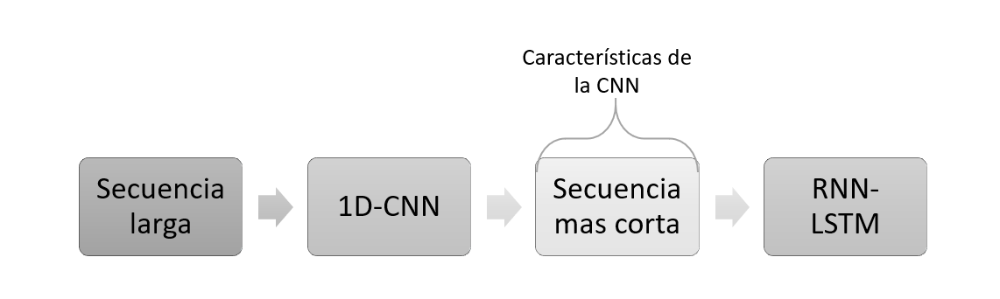
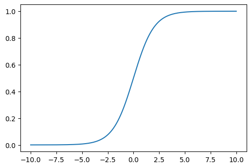
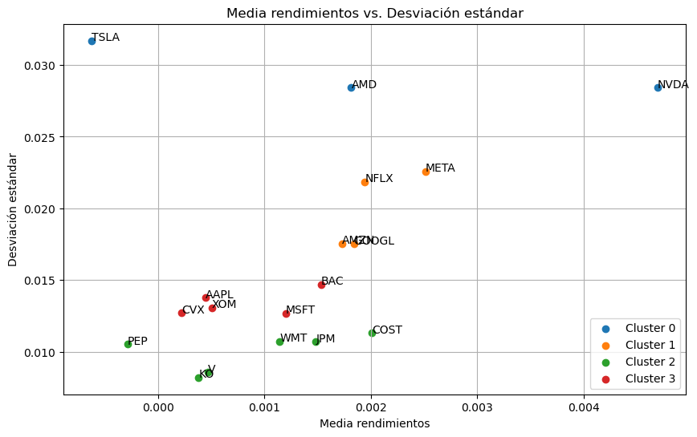
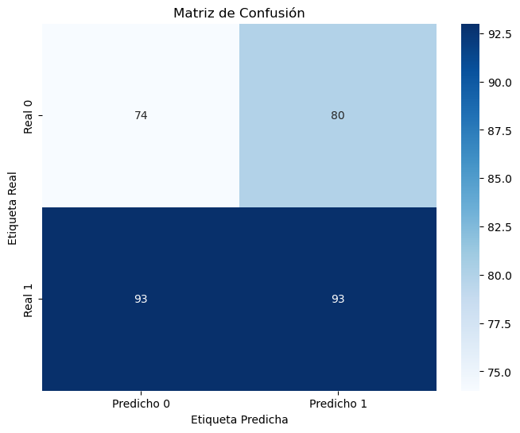
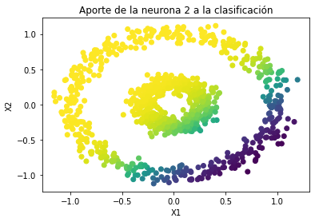
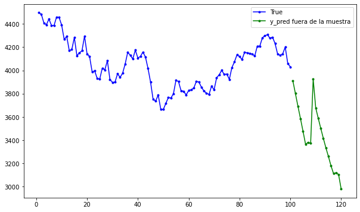
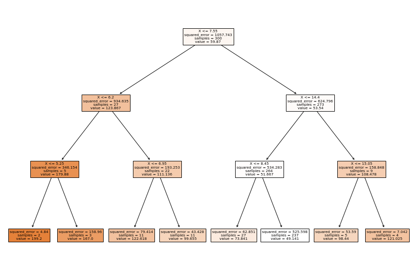

CNN-LSTM para series de tiempo¶
Debido a que las 1D-CNN procesan los patches de entrada de forma independiente, se pierde la sensibilidad a los intervalos de tiempo cuando se analiza más allá de una escala local, es decir, el tamaño de la ventana de convolución.
Para reconocer patrones a más largo plazo, se puede apilar muchas capas de convolución y capas de agrupación, lo que daría como resultado capas superiores que verían grandes porciones de las entradas originales, pero esa sigue siendo una forma bastante débil de inducir la sensibilidad al orden.
Una estrategia mejor consolidada es combinar la velocidad de las CNN como preprocesamiento, antes de una RNN, es decir, La CNN convertirá la secuencia de entrada larga, en secuencias mucho más cortas. Esta secuencia de características extraídas luego se convierte en la entrada de la parte RNN de la red.

CNN-RNN¶
El beneficio de este modelo es que puede admitir secuencias de entrada muy largas que el modelo CNN puede leer como bloques o subsecuencias y luego unirlas con el modelo LSTM.
Al usar un modelo híbrido CNN-LSTM, dividiremos aún más cada muestra en más subsecuencias. El modelo CNN interpretará cada subsecuencia y el LSTM juntará las interpretaciones de las subsecuencias. Como tal, dividiremos cada muestra en 2 subsecuencias.
La CNN se definirá para esperar cinco pasos de tiempo por subsecuencia
con una característica (feature). Luego, todo el modelo de CNN se
envuelve en capas de envoltura TimeDistributed para que se pueda
aplicar a cada subsecuencia en la muestra. Luego, los resultados son
interpretados por la capa LSTM antes que el modelo genere una
predicción.
El primer paso es dividir las secuencias de entrada en subsecuencias que
puedan ser procesadas por el modelo CNN. Por ejemplo, primero podemos
dividir nuestros datos de series temporales univariadas en muestras de
entrada/salida con 10 pasos como entrada y uno como salida. Luego, cada
muestra se puede dividir en dos submuestras, cada una con cinco pasos de
tiempo. La CNN puede interpretar cada subsecuencia de cinco pasos de
tiempo y proporcionar una serie temporal de interpretaciones de las
subsecuencias al modelo LSTM para procesar como entrada. Podemos
parametrizar esto y definir el número de subsecuencias como
subsequences y el número de pasos de tiempo por subsecuencia como
timesteps. Luego, los datos de entrada se pueden remodelar para
tener la estructura requerida:
[samples, subsequences, timesteps, features].
Código:¶
import pandas as pd
import numpy as np
import matplotlib.pyplot as plt
import yfinance as yf
from sklearn.preprocessing import StandardScaler
import warnings # Para ignorar mensajes de advertencia
warnings.filterwarnings("ignore")
Descargar datos desde Yahoo Finance:¶
tickers = ["ES=F"]
ohlc = yf.download(tickers, period="max")
print(ohlc.tail())
[*******************100%*********************] 1 of 1 completed
Open High Low Close Adj Close Volume
Date
2022-08-29 4024.00 4064.00 4006.75 4031.25 4031.25 1963446
2022-08-30 4035.75 4072.75 3964.50 3987.50 3987.50 2555455
2022-08-31 3987.25 4018.25 3953.00 3956.50 3956.50 2366488
2022-09-01 3958.00 3971.25 3903.50 3968.75 3968.75 2212034
2022-09-02 3967.50 4019.25 3906.00 3933.25 3933.25 2439403
df = ohlc["Adj Close"].dropna(how="all")
df.tail()
Date
2022-08-29 4031.25
2022-08-30 3987.50
2022-08-31 3956.50
2022-09-01 3968.75
2022-09-02 3933.25
Name: Adj Close, dtype: float64
df = np.array(df[:, np.newaxis])
df.shape
(5551, 1)
plt.figure(figsize=(10, 6))
plt.plot(df)
plt.show()

Conjunto de train y test:¶
time_test = 0.10
train = df[: int(len(df) * (1 - time_test))]
test = df[int(len(df) * (1 - time_test)) :]
plt.plot(train)
plt.xlabel("Tiempo")
plt.ylabel("Precio")
plt.title("Conjunto de train")
plt.show()
plt.plot(test)
plt.xlabel("Tiempo")
plt.ylabel("Precio")
plt.title("Conjunto de test")
plt.show()


Función para conformar el dataset para datos secuenciales:
def split_sequence(sequence, time_step):
X, y = list(), list()
for i in range(len(sequence)):
end_ix = i + time_step
if end_ix > len(sequence) - 1:
break
seq_x, seq_y = sequence[i:end_ix], sequence[end_ix]
X.append(seq_x)
y.append(seq_y)
return np.array(X), np.array(y)
time_step = 20
X_train, y_train = split_sequence(train, time_step)
X_test, y_test = split_sequence(test, time_step)
X_train.shape
(4975, 20, 1)
X_test.shape
(536, 20, 1)
Arquitectura de la red con CNN:¶
El siguiente ejemplo tendrá dos capas de convolución, pero solo se
aplica pooling a la salida de la segunda capa Conv1D. Se podría
agregar pooling a la salida de cada capa de convolución. Luego, se
agrega una capa Flatten para conectar la red neuronal artificial.
Esta RNA solo tiene una capa oculta, pero se podrían agregar varias
capas ocultas. Es común agregar capas Dropout en la RNA porque se
usan muchas neuronas y así evitar el overfitting.
from keras.models import Sequential
from keras.layers import Dense
from keras.layers import Conv1D
from keras.layers import MaxPooling1D
from keras.layers import Flatten
from keras.layers import TimeDistributed
from keras.layers import LSTM
Subsecuencias:¶
El beneficio de este modelo es que puede admitir secuencias de entrada muy largas que el modelo CNN puede leer como bloques o subsecuencias y luego unirlas con el modelo LSTM.
Reshape desde [samples, timesteps, features] en
[samples, subsequences, timesteps, features].
print(X_train.shape)
print(X_test.shape)
(4975, 20, 1)
(536, 20, 1)
subsequences = 4
timesteps = X_train.shape[1]//subsequences # Para determinar los pasos de tiempo dadas unas subsecuencias
X_train = X_train.reshape((X_train.shape[0], subsequences, timesteps, 1))
X_test = X_test.reshape((X_test.shape[0], subsequences, timesteps, 1))
print(X_train.shape)
print(X_test.shape)
(4975, 4, 5, 1)
(536, 4, 5, 1)
model = Sequential()
model.add(TimeDistributed(Conv1D(filters=64, kernel_size=3, activation='relu',
input_shape=(None, timesteps, 1),
padding = "valid",
strides = 1)))
model.add(TimeDistributed(Conv1D(filters=64, kernel_size=2, activation='relu',
padding = "valid",
strides = 1)))
model.add(TimeDistributed(MaxPooling1D(pool_size=2)))
model.add(TimeDistributed(Flatten()))
model.add(LSTM(50, activation='relu')) # LSTM
model.add(Dense(1))
model.compile(optimizer='adam', loss='mse')
history = model.fit(
X_train,
y_train,
validation_data=(X_test, y_test),
epochs=50,
batch_size=32,
verbose=0
)
Evaluación del desempeño:¶
rmse = model.evaluate(X_test, y_test, verbose=0) ** 0.5
rmse
60.532457960972266
plt.plot(range(1, len(history.epoch) + 1), history.history["loss"], label="Train")
plt.plot(range(1, len(history.epoch) + 1), history.history["val_loss"], label="Test")
plt.xlabel("epoch")
plt.ylabel("Loss")
plt.legend();

Predicción del modelo:¶
y_pred = model.predict(X_test, verbose=0)
y_pred[0:5]
array([[3239.7659],
[3231.7495],
[3209.2126],
[3191.7195],
[3198.6777]], dtype=float32)
plt.figure(figsize=(18, 6))
plt.plot(
range(1, len(X_test) + 1),
test[time_step:, :],
color="b",
marker=".",
linestyle="-",
label="True"
)
plt.plot(
range(1, len(X_test) + 1),
y_pred,
color="g",
marker=".",
linestyle="-",
label="y_pred"
)
plt.legend();

Predicción fuera de la muestra:¶
predictions = []
time_prediction = 20 # cantidad de predicciones fuera de la muestra
first_sample = df[-time_step:, 0] # última muestra dentro de la serie de tiempo
current_batch = first_sample.reshape((1, subsequences, timesteps, 1))
for i in range(time_prediction):
current_pred = model.predict(current_batch, verbose=0)[0]
# Guardar la predicción
predictions.append(current_pred)
current_batch = current_batch.flatten()
current_batch = np.append(current_batch[1:], [[current_pred]])
current_batch = current_batch.reshape((1, subsequences, timesteps, 1))
plt.figure(figsize=(10, 6))
plt.plot(
range(1, len(df[-100:, 0]) + 1),
df[-100:, 0],
color="b",
marker=".",
linestyle="-",
label="True"
)
plt.plot(
range(len(df[-100:, 0]) + 1, len(df[-100:, 0]) + len(predictions) + 1),
predictions,
color="g",
marker=".",
linestyle="-",
label="y_pred fuera de la muestra"
)
plt.legend();
